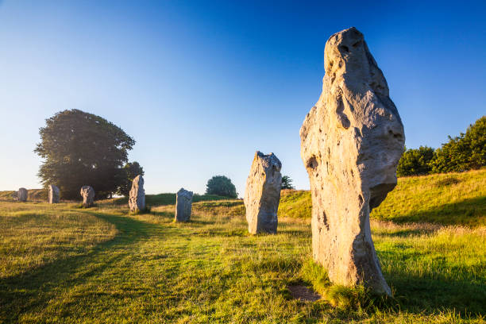

EUROPE
Avebury
Avebury is a Neolithic henge monument containing three stone circles, around the village of Avebury in Wiltshire, in southwest England. One of the best known prehistoric sites in Britain, it contains the largest megalithic stone circle in the world.
Columbus Monument

The Columbus Monument is a 60 m tall monument to Christopher Columbus at the lower end of La Rambla, Barcelona, Catalonia, Spain. It was constructed for the Exposición Universal de Barcelona in honor of Columbus' first voyage to the Americas.
Holy Trinity Column in Olomouc

The Holy Trinity Column in Olomouc, in the Czech Republic is a Baroque monument that was built between 1716 and 1754. The main purpose was to celebrate the Catholic Church and faith, partly caused by feeling of gratitude for ending a plague, which struck Moravia between 1713 and 1715.